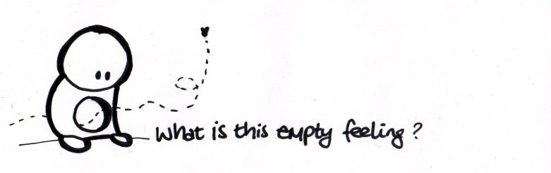

<div style="margin-top:75px; margin-left:2%; max-height:790px; overflow-y: auto;" #messagesDiv>
    <div *ngFor="let message of chat" [ngClass]="message.user == userName ? 'my-messages' : 'other-messages'" style="margin-bottom:1%; overflow: visible;">
        <span>
            <b>{{message.user}}</b>
        </span>
        <br/>
        <span style="font-size:1.5em;">{{message.message}}</span>
    </div>
    <!-- Image taken from https://www.betterhelp.com/advice/general/i-feel-empty-when-a-lack-of-meaning-is-something-more-serious/ -->
    
</div>
<footer class="fixed-bottom">
    <textarea class="message-box" style="resize: none;" placeholder="enter text here" name="textbox" [(ngModel)]="textMessage"
        (keydown.enter)="sendMessage(messagesDiv);"></textarea>
    <input type="submit" value="&crarr;" class="submit-msg-btn" style="font-size:1.5em;" (click)="sendMessage(messagesDiv);"
    />
</footer>